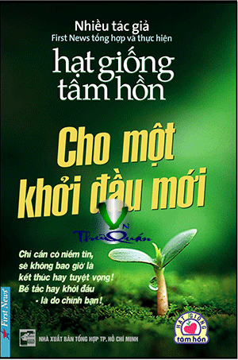

« Back
Hạt Giống Tâm Hồn - Tuyển Tập
By First News

Giới Thiệu
Tập 1Kỳ Diệu Từ Những Điều Giản Dị...
Giá Trị Của Thử Thách
Đến Một Ngày...
Tin Tốt Lành
Không Đề
Cội Rễ Của Sự Trưởng Thành
Đừng Bao Giờ Từ Bỏ Ước Mơ
Mỗi Ngày Là Một Món Quà
Chắp Cánh Ước Mơ
Những Con Đường Mới
Tâm Hồn Và Tình Yêu Của Thiên Nga
Người Chạy Cuối Cùng
Lắng Nghe Những Điều Giản Dị
Tình Yêu Tạo Nên Lẽ Sống
Những Chiến Binh Tí Hon
Có Công Mài Sắt...
Không Đầu Hàng Số Phận
Mái Nhà Chở Che
Bước Ngoặt Cuộc Đời
Đừng Sợ Đối Mặt Với Nỗi Sợ Hãi
Tấm Huy Chương Vàng
Sức Sống Mãnh Liệt
Đôi Mắt Biết Nói
Tấm Lòng Cô Giáo
Đêm Cuối Cùng
Quà Sinh Nhật
Bàn Tay Cô Giáo
Ước Mơ Bé Bỏng
Người Phụ Nữ Nhân Hậu
Sự Lựa Chọn Của Mẹ
Không Việc Gì Phải Lo
Cuộc Sống Vẫn Còn Ý Nghĩa
Ý Nghĩa Của Nụ Cười
Không Bao Giờ Quá Muộn
Lỗi Lầm
Mãi Mãi Tuổi 17
Nguồn Động Viên
Giai Điệu Tuyệt Vời
Vị Ngọt Tình Yêu
Chiếc Bình Vỡ
Bộ Đồ Của Ba
Khi Bạn Vội Vã
Bài Học Về Cách Chấp Nhận
Người Chia Sẻ Với Người Khác Nhiều Nhất
Tập 2Sẽ Đến Lúc...
Bí Mật Hạnh Phúc
Bạn Để Lại Gì Cho Cuộc Sống?
Nhận Biết Chính Mình
Món Quà Của Tình Yêu
Chấp Nhận Mạo Hiểm
Bữa Điểm Tâm Bằng Hồ Dán
Những Chiếc Hộp
Trở Về Mái Ấm
Gã Khổng Lồ Một Mắt
Tiếng Nói Không Lời
Mẹ Và Con Gái
Sức Mạnh Của Niềm Tin
Không Bao Giờ Bỏ Cuộc
Hai Anh Em
Giấc Mơ Hão Huyền
Bài Học Từ Một Chuyến Đi
Quà Tặng Dành Cho Trái Tim Tan Vỡ
Niềm Tin
Bỏ Qua Oán Hờn
Mẹ Và Cuộc Hành Trình Của Bạn
Hồ Nước
Tình Yêu Vô Điều Kiện
Giá Trị Của Lòng Biết Ơn
Món Quà Cuối Cùng
Nhận Thức
Lời Khen Quý Báu
Tiếng Đàn Dương Cầm
Hãy Dám Tưởng Tượng
Vượt Qua Bức Tường Câm Lặng
Cách Nhìn
Bạn Bè Và Người Quen
Bạn Bè Phải Thế Chứ!
Cái Hũ
Ngôi Nhà Có Một Nghìn Chiếc Gương
Chạm Đáy
Chiếc Giày Đánh Rơi Của Gandhi
Đôi Tay Của Mẹ
Vết Sẹo
Cha Tôi
Dời Núi
Khung Cửa Lấp Lánh
Chuyện Xây Cầu Brooklyn
Nỗi Đau Sẽ Đi Qua Và Cái Đẹp Ở Lại
Lá Thư Người Mẹ
Viên Ngọc Của Người Mẹ
TẬP 3Từ Những Điều Bình Dị
Đấu Trường Và Cuộc Sống
Phút Tĩnh Lặng
Ý Nghĩa Công Việc
Con Đường Phía Trước
Số Phận Hay Bản Lĩnh
Phép Màu Giá Bao Nhiêu?
Nhặt Vài Cuốn Sách - Cứu Một Đời Người
Bài Học Từ Trò Chơi Ghép Hình
Điều Gì Đến Sẽ Đến
Câu Chuyện Của Hai Hạt Mầm
Viên Đá Quan Trọng
Lời Nói Và Những Vết Đinh
Tốc Độ, Góc Nhìn Và Tổn Thương
Bức Thông Điệp Không Lời
Phần Quan Trọng Nhất
Hãy Bước Lên
Bác Cũng Là Cướp Biển!
Lá Cuối Năm
Hy Vọng
Bài Học Từ Người Thấy Dạy Võ
Kho Tàng Trong Túi Giấy
Điều Bình Dị
Câu Chuyện Ven Đường
Khó Khăn Thử Thách Để Lại Gì?
Hãy Sống Với Ước Mơ
Thời Khắc Đẹp Nhất Của Cuộc Đời
Ai Sẽ Là Người Công Nhận Ta?
Liều Thuốc Cho Sự Đau Khổ
Đám Tang Ngài "Tôi Không Thể"
Những Vòng Tròn Nước
Món Quà Vàng
Tiết Mục Đọc Thơ Của Patty
Bình Yên Trong Bão Tố
Sức Mạnh Và Dũng Khí
Giá Trị Của Sự Quan Tâm
Mảnh Gương Vỡ
Cây Giữ Phiền Muộn
Bức Thư Gửi Cuộc Sống
Có Thể Cuộc Sống Đã Công Bằng
Chân Dung Của Bạn
Người Yêu Quý Nhất
Dharma
Điều Kỳ Diệu Của Tình Yêu
Sự Chia Sẻ Chân Thành
Làm Được Điều Gì Đó
Di Sản Của Cha
Đóa Hoa Sơn Chi
Giá Trị
Nếu Ngày Mai Chẳng Bao Giờ Đến Nữa
Bạn Đã Dành Cho Gia Đình Những Gì?
Lời Khuyên Cuộc Sống
Lời Nhắn Gửi Muộn Màng
Bông Hoa Đẹp Nhất
Bán Cho Con Một Giờ Của Ba!
Ước Mơ Bình Thường
Hãy Cố Gắng Khi Còn Có Thể